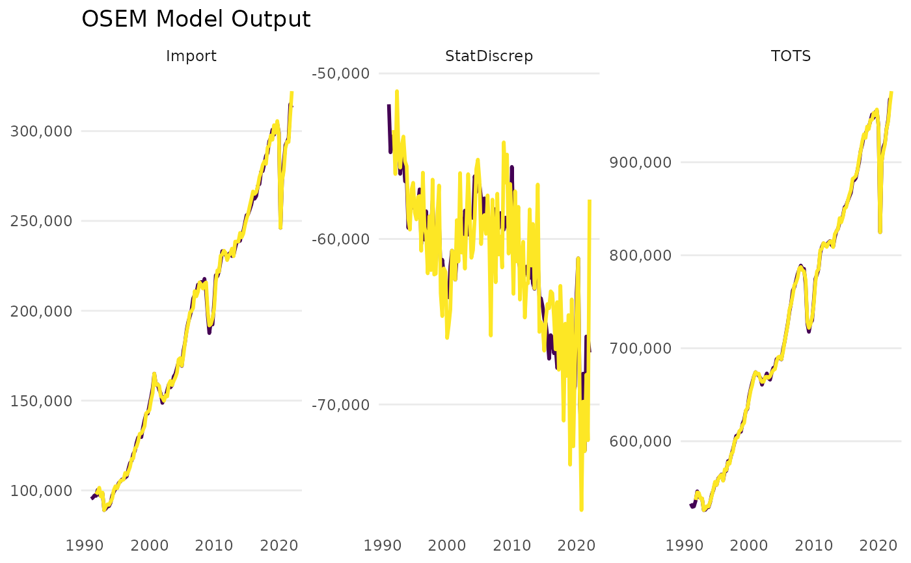

OSEM Model Table
model_table.RdShow the final regression equations estimated by the OSEM Model
Arguments
- model
An OSEM model object or class
osem, created by therun_modelfunction.- output
Character. Either "default", "html", "data.frame", or "latex". Default is "default" (which is the default in the
modelsummaryfunction.- title
Character. The title of the table. Default is "OSEM Model Results".
Value
A table summarizing the regression results of the OSEM model (either an html or a text (latex) table).
Examples
spec <- dplyr::tibble(
type = c(
"d",
"d",
"n"
),
dependent = c(
"StatDiscrep",
"TOTS",
"Import"
),
independent = c(
"TOTS - FinConsExpHH - FinConsExpGov - GCapitalForm - Export",
"GValueAdd + Import",
"FinConsExpHH + GCapitalForm"
)
)
# \donttest{
a <- run_model(specification = spec)
#> Dataset query already saved in cache_list.json...
#> Reading cache file /tmp/RtmpBcVZGK/eurostat/66aa897f8c3c5210794b619cbe8d620a.rds
#> Table namq_10_a10 read from cache file: /tmp/RtmpBcVZGK/eurostat/66aa897f8c3c5210794b619cbe8d620a.rds
#> Dataset query already saved in cache_list.json...
#> Reading cache file /tmp/RtmpBcVZGK/eurostat/bfb51cc9204226ff2d54d584bda7668f.rds
#> Table namq_10_gdp read from cache file: /tmp/RtmpBcVZGK/eurostat/bfb51cc9204226ff2d54d584bda7668f.rds
#>
#> --- Estimation begins ---
#> Estimating Import = FinConsExpHH + GCapitalForm
#> Constructing TOTS = GValueAdd + Import
#> Constructing StatDiscrep = TOTS - FinConsExpHH - FinConsExpGov - GCapitalForm - Export

model_table(a)
#>
#> +--------------------+-----------+
#> | | Import |
#> +====================+===========+
#> | ar1 | 0.952*** |
#> +--------------------+-----------+
#> | | (0.070) |
#> +--------------------+-----------+
#> | ar2 | -0.013 |
#> +--------------------+-----------+
#> | | (0.066) |
#> +--------------------+-----------+
#> | trend | 0.000* |
#> +--------------------+-----------+
#> | | (0.000) |
#> +--------------------+-----------+
#> | ln.FinConsExpHH | 0.656*** |
#> +--------------------+-----------+
#> | | (0.151) |
#> +--------------------+-----------+
#> | L3.ln.FinConsExpHH | -0.326** |
#> +--------------------+-----------+
#> | | (0.097) |
#> +--------------------+-----------+
#> | L1.ln.FinConsExpHH | -0.226 |
#> +--------------------+-----------+
#> | | (0.142) |
#> +--------------------+-----------+
#> | ln.GCapitalForm | 0.357*** |
#> +--------------------+-----------+
#> | | (0.038) |
#> +--------------------+-----------+
#> | L2.ln.GCapitalForm | -0.096* |
#> +--------------------+-----------+
#> | | (0.044) |
#> +--------------------+-----------+
#> | L1.ln.GCapitalForm | -0.313*** |
#> +--------------------+-----------+
#> | | (0.052) |
#> +--------------------+-----------+
#> | Num.Obs. | 122 |
#> +--------------------+-----------+
#> | AIC | -688.6 |
#> +--------------------+-----------+
#> | BIC | -646.5 |
#> +--------------------+-----------+
#> | Log.Lik. | 359.282 |
#> +====================+===========+
#> | + p < 0.1, * p < 0.05, ** p < |
#> | 0.01, *** p < 0.001 |
#> +====================+===========+
#> | Quarterly Dummies, Impulse |
#> | (IIS) and Step Indicators |
#> | (SIS) are not shown |
#> | individually but were |
#> | activated for all models. |
#> +====================+===========+
#> Table: OSEM Model Results
# }